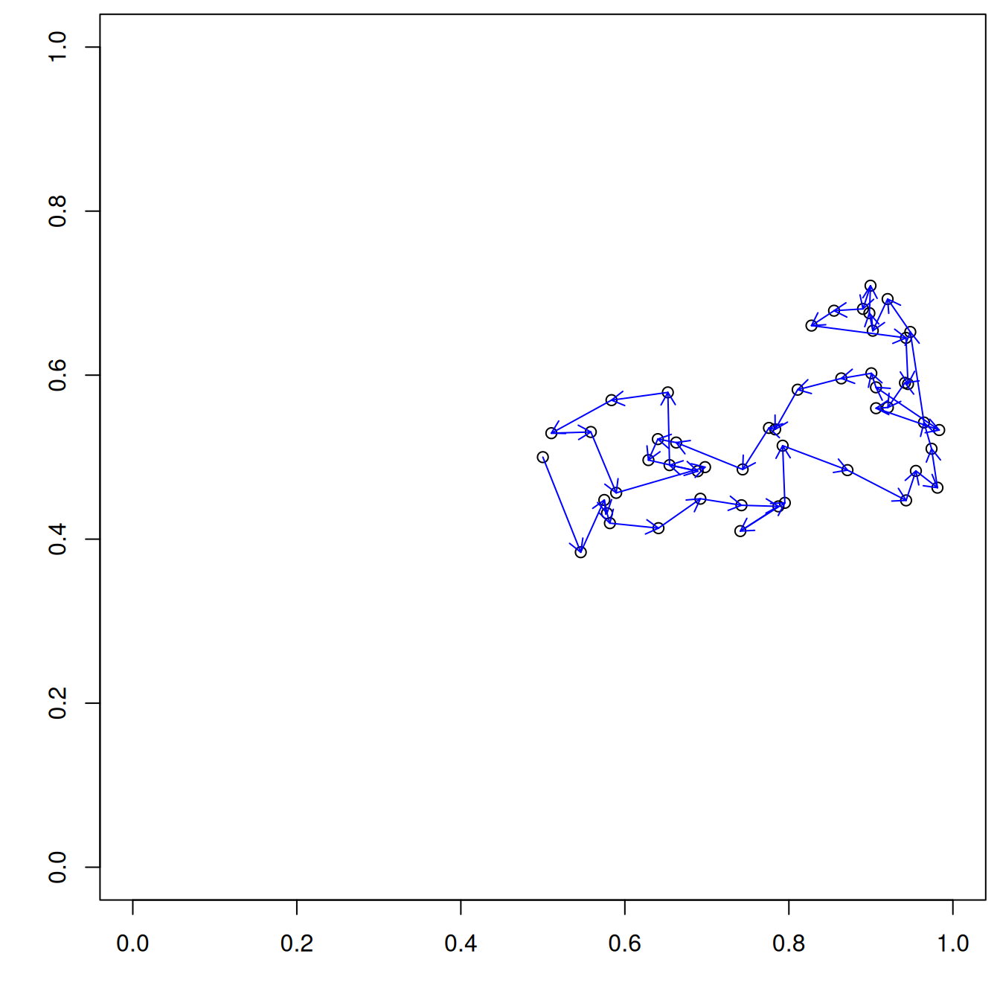
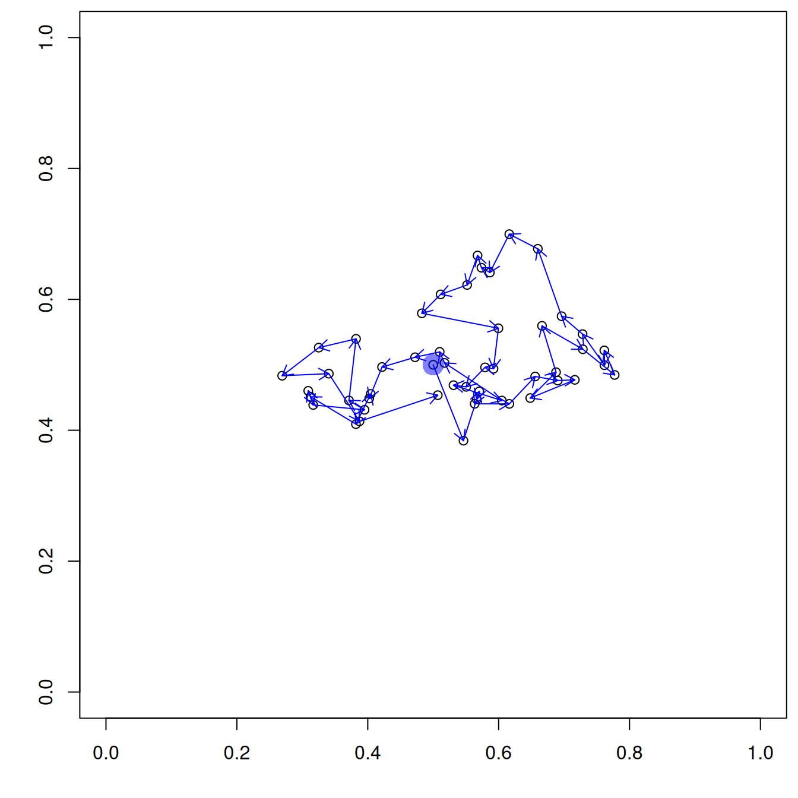
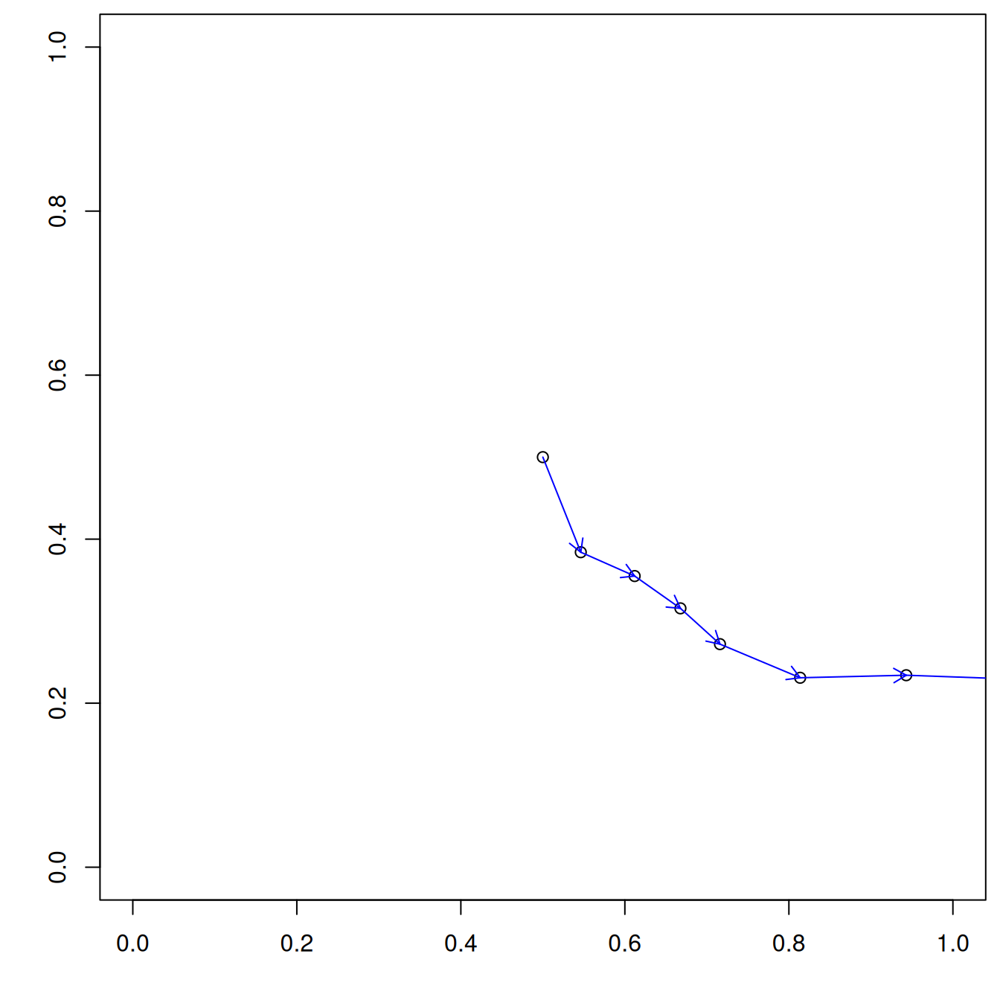

2025-11-18
\[ \def\RR{{\bf R}} \def\bold#1{{\bf #1}} \def\but{{\boldsymbol u_t}} \def\butp{{\boldsymbol u_{t+1}}} \def\beps{{\boldsymbol \varepsilon}} \]
\[ {\boldsymbol u_{t+1}} = \but + \beps \]
where
\[ {\boldsymbol \varepsilon} = \text{Norm}(0, \sigma^2 {\bf I}) \]

\[\begin{equation} {\boldsymbol u_{t+1}} = \but + {\bf B}(\but-{\boldsymbol s}) + \beps \label{eq:brwalk} \end{equation}\]
where, typically
\[ \begin{equation} {\bf B} = \begin{pmatrix} \rho & 0 \\ 0 & \rho \end{pmatrix} \end{equation} \]
with \(\rho \in [0,1]\)

\[\begin{equation} \butp = \but + {\bf R}(\but-{\boldsymbol u}_{t-1}) + \beps \label{eq:crwalk} \end{equation}\]
where
\[ {\bf R} = \gamma \begin{pmatrix} \cos(\theta) & -\sin(\theta) \\ \sin(\theta) & \cos(\theta) \end{pmatrix} \] with \(\theta \in [-\pi,\pi]\) being the expected turn angle, and \(\gamma \in [0,1]\) dampening the persistence.
sigma <- 0.05
gamma <- 0.8 ## Damping of correlated walk
theta <- 0 ## Correlation (-pi,pi)
T <- 50
u <- matrix(NA, nrow=T, ncol=2)
u[1,] <- c(0.5,0.5)
u[2,] <- rnorm(2, u[1,], sd=0.05)
R <- gamma*matrix(c(cos(theta),sin(theta),-sin(theta),cos(theta)),
nrow=2, ncol=2)
for(t in 3:T) {
epsilon <- rnorm(n=2, mean=c(0,0), sd=sigma)
u[t,] <- u[t-1,] + R%*%(u[t-1,]-u[t-2,]) + epsilon
}
par(mai=c(0.7,0.7,0.1,0.1))
plot(u, asp=1, xlim=c(0,1), ylim=c(0,1),
xlab="", ylab="")
arrows(u[1:49,1], u[1:49,2],
u[2:50,1], u[2:50,2], length=0.1,
col="blue")
\[ \butp = \but + {\bf D}\nabla x(\but) + \beps \]
where \(\bf D = \alpha {\bf I}\) is a \(2\times2\) matrix describing the effect of the gradient in the environment (\(\nabla x\)) at location \(\but\).
Positive values of \(\alpha\) describe the scenario in which the organism tends to move in the direction of the gradient. If \(\alpha=0\), the individual will ignore the environment as it follows a simple random walk.
set.seed(430)
library(terra)
delta <- 0.025 ## Resolution
grid0 <- seq(delta/2, 1-delta/2, delta)
grid <- cbind(rep(grid0, each=length(grid0)), rep(grid0, times=length(grid0)))
distmat <- as.matrix(dist(grid)) ## Distance b/w grid points
npixels <- nrow(distmat)
V <- exp(-0.1*distmat) ## Covariance
R <- chol(V)
X <- t(R) %*% rnorm(npixels) ## Gaussian random field
Xr <- rast(cbind(grid, X), type="xyz", ## Convert to raster
crs="+proj=utm +zone=17 +datum=NAD83 +units=m +no_defs +type=crs")
terr <- terrain(Xr, v=c("slope","aspect")) ## Slope and aspect
vfieldU <- terr$slope * sin(terr$aspect) ## x-coord of arrow head
vfieldV <- terr$slope * cos(terr$aspect) ## y-coord of arrow head
vfieldData <- cbind(as.data.frame(Xr, xy=TRUE), v1=values(vfieldU), v2=values(vfieldV))
names(vfieldData) <- c("s1","s2","X","v1","v2")